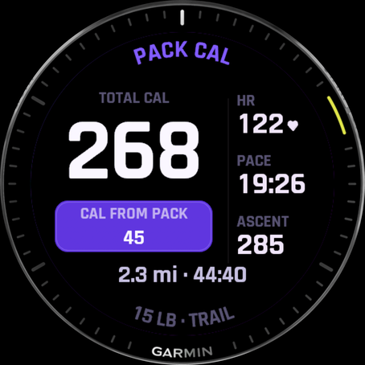
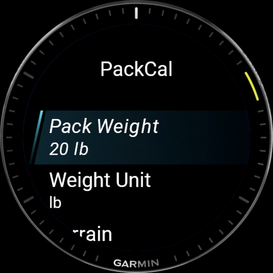
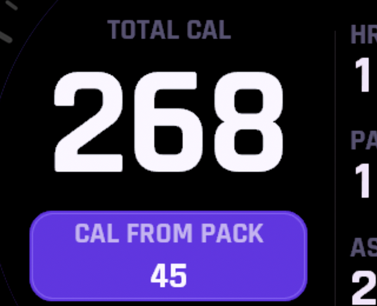
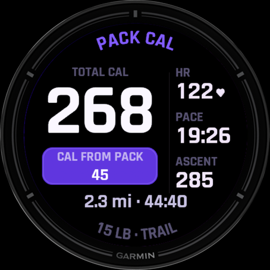

For Garmin watches
PackCal is a single data field for weighted-vest walkers, ruckers, and loaded hikers. Drop it into your Walk, Hike, or Ruck and it runs the Pandolf load-carriage equation on your vest or pack weight, terrain, and grade, so every calorie includes the load your watch normally ignores. Calories are the hero of the cell.
One-time purchase. No ads, no account, no phone app, no subscription.

Why PackCal
Strap on a 20-pound weighted vest or shoulder a loaded pack, and Garmin's built-in Walk and Hike profiles still count calories as if you're empty-handed, under-crediting the work by 10 to 20 percent. PackCal uses the Pandolf load-carriage equation, the model from U.S. Army load-carriage research, to fold your vest or pack weight, terrain, and grade into the number. It's the same calorie engine as its full-app sibling, RuckTrack, in a single field you add to the activity you already use.
Pandolf math on vest or pack weight, speed, grade, and surface (Road, Gravel, Trail, Sand, Snow). The calorie total is the hero of the cell, largest, centered, always.
On GPS warm-up, dropouts, or a stop on a hill, PackCal falls back to your watch's own calorie estimate so the number never stalls, then resumes load-aware counting when the signal returns.
Give it a whole single-field screen and it shows the calorie hero plus a live HR / pace / ascent rail, a pack-bonus pill, and a timer-and-distance footer. In a denser multi-field layout it degrades cleanly to a labelled number.
PackCal claims the load-aware number only where the math is honest: Walk, Hike, and Ruck. In activities where a pack number wouldn't be meaningful it shows a clear "—" instead of a wrong figure.
Pack weight, units, terrain, and energy unit (kcal or kJ) are all configurable right on the watch, no phone, no Connect IQ app trip required.
Every setting stays on your watch. No companion phone app, no servers, no analytics, no third-party SDKs. Read the privacy policy →
How it works
You don't start "PackCal." You add it to an activity you already use, and it shows up as a cell on that activity's screen. Here's the whole setup:
Install PackCal, then open your activity's data-screen settings, pick a field slot, and choose Connect IQ Fields → PackCal. Set your vest or pack weight in PackCal's on-watch settings and start moving. The load-aware calorie total appears live in the cell. When you save, the pack-aware totals also land in Garmin Connect under Stats → Connect IQ.

On a full single-field screen, a pack-bonus pill shows the calories that came from the load, the difference between carrying your pack and walking empty. It's the whole reason to track a loaded carry separately.

The layout is drawn by hand and adapts to each device's cell size and shape (round or rectangular, AMOLED or MIP), with a condensed, sun-legible numeral face. Calories stay the hero from a spacious Forerunner screen down to a compact fēnix cell.

In Garmin Connect
Because PackCal rides inside your activity, its numbers travel with that activity's FIT file. Open any saved session and look under Stats → Connect IQ for pack weight, pack calories, and terrain, the same load-aware fields RuckTrack writes, so your activity detail reads consistently whichever one recorded it.
Compatibility
The Forerunner 165 / 255 / 265 / 570 / 955 / 965 / 970, the fēnix 7 and fēnix 8 families, Enduro 3, Instinct 3, Venu 2 / 3 / X1 / Sq 2, vívoactive 5 / 6, epix Pro, and more, every Connect-IQ-5 watch with a data-field slot. Check the Connect IQ Store listing for the live compatibility list.
Add it to the activity you already use and every loaded carry counts the weight your watch was leaving out.
Get PackCal on the Connect IQ StoreWant the full rucking app instead? Meet RuckTrack →